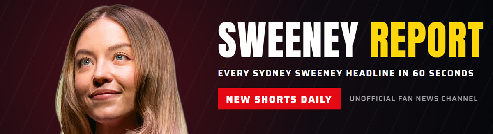
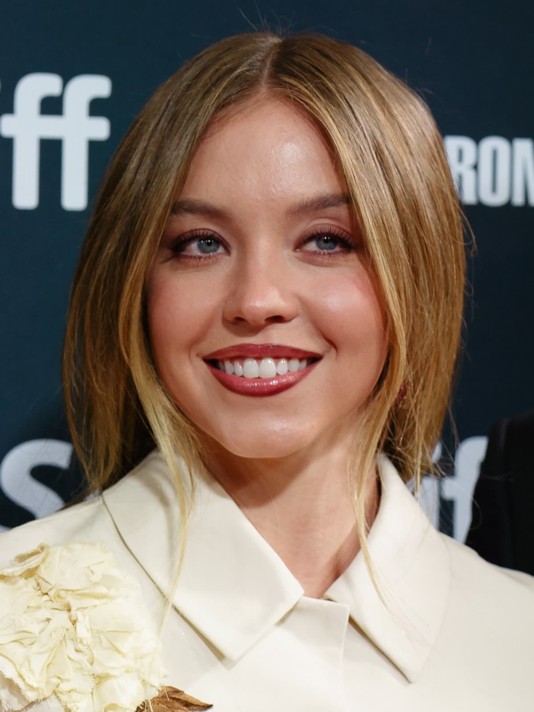
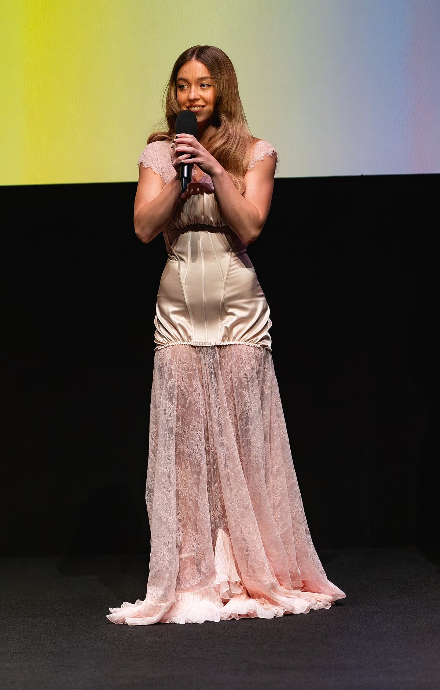
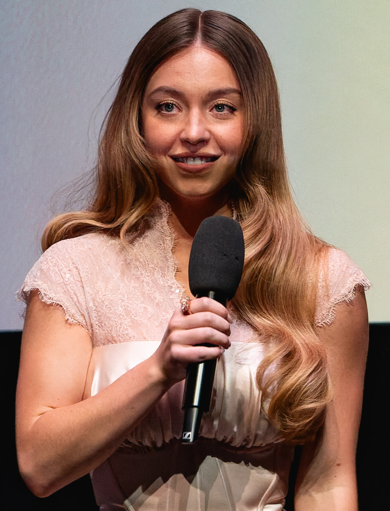

Every Sydney Sweeney headline, in 60 seconds.
Movies, series, casting, box office, interviews, her SYRN brand and her ads: the latest Sydney Sweeney news, with every source linked. Watch the Shorts on YouTube.


Sydney Sweeney Loses Top Spot in Bond Girl Odds to Ex Co-Star
Margaret Qualley now leads the next Bond girl betting odds at 33 percent, per BetOnline, with Sydney Sweeney at 25 percent, tied with Anya Taylor-Joy.
October 27, 2026

Sydney Sweeney Says Nude Scenes Can Degrade Female Actors
Sydney Sweeney reportedly said filming nude scenes can degrade female actors, reviving a double-standard argument she has made before, OK Magazine reported.
October 26, 2026

Sydney Sweeney's Car Hobby Is Becoming a Business: Syd's Garage
Backfire News reported a trademark filing for Syd's Garage, a name from Sydney Sweeney's TikTok that may point to a bigger car-focused business.
October 26, 2026

Sydney Sweeney's Sleepy Hollow Thriller Is Filming In Ireland
Co-star Belmont Cameli told Deadline that the Sleepy Hollow retelling with Sydney Sweeney will shoot in Ireland in spring 2027.
October 26, 2026

Sydney Sweeney's Cut Devil Wears Prada 2 Cameo Explained
Writer Aline Brosh McKenna confirmed Sydney Sweeney is not in The Devil Wears Prada 2, and an insider says her planned scene felt out of place.
October 26, 2026

Sydney Sweeney: What Euphoria's Creator Says About Her Scenes
Sam Levinson told The New York Times he weighed a nudity-free final season for Cassie, but Sydney Sweeney disagreed, citing the character's story.
October 25, 2026

Sydney Sweeney's SYRN Slogan Has Swifties Talking
A SYRN product reading "but daddy I love him" led fans to link Sydney Sweeney to Taylor Swift, though neither star has commented.
October 25, 2026

Sydney Sweeney's Name Is Now in a California Voter ID Ad
A California pro-voter ID ad built on the line "I'm Sydney Sweeney" drew praise from BizPac Review and a sharp critique of state voting from The Daily Signal.
October 25, 2026

Sydney Sweeney's Madame Web Hits HBO Max November 14
Madame Web, with Sydney Sweeney as Julia Cornwall, arrives on HBO Max on November 14 after a box office run that Screen Rant says fell short.
October 25, 2026

Sydney Sweeney Joke Puts Ali G in Hot Water
Sacha Baron Cohen's in-character remark about Sydney Sweeney at the Ali G: Who Iz I? premiere reportedly drew calls for him to be cancelled.
October 25, 2026

Sydney Sweeney Is Reportedly Related To Marilyn Monroe
MyHeritage says new genealogy research links Sydney Sweeney and Marilyn Monroe as ninth cousins, one generation removed, through a 1600s settler.
October 25, 2026

Sydney Sweeney's SYRN Holiday Ads Spark Backlash Over Kids' Movies
Critics reportedly accused Sydney Sweeney's SYRN brand of sexualizing children's film characters in a Christmas campaign, sparking a wider debate.
October 25, 2026

Sydney Sweeney Was Told Not To Audition For Euphoria
Sydney Sweeney has said a casting director first thought she did not fit Cassie, but a self-taped audition with her mom led to the Euphoria role.
October 24, 2026

Sydney Sweeney's Novig Ad Splits Athletes: Hull vs Titmus
Golfer Charley Hull defended Sydney Sweeney's Novig betting ad while swimmer Ariarne Titmus stood by her earlier criticism, dividing athletes publicly.
October 24, 2026

Sydney Sweeney's Housemaid Is Back on Top of HBO Max
Sydney Sweeney's R-rated thriller The Housemaid reached the top of HBO Max after its October 9 arrival, with a sequel already greenlit by Lionsgate.
October 24, 2026